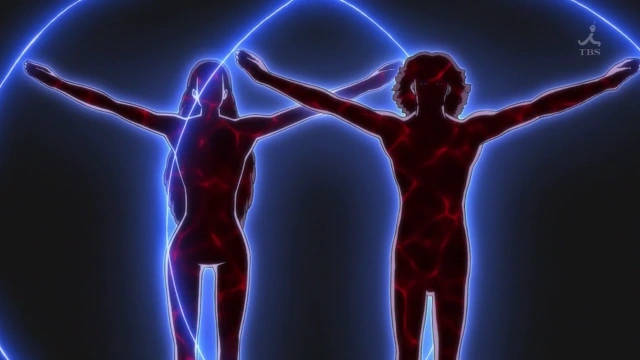

Humano
Los seres humanos son los seres dominantes en el planeta Tierra y constituyen la mayor parte de su población animal. Además de ser la única forma de vida capaz de utilizar herramientas y habilidades de una manera avanzada, también son la única especie conocida en la Tierra capaz de realizar la alquimia. Además, tal como se entiende en el universo de Fullmetal Alchemist, los seres humanos están compuestos alquímicamente de tres partes principales: el cuerpo, el alma y la mente.
Descripcion
El cuerpo físico, que es un sistema complejo de huesos, músculos, órganos, nervios y vasos sanguíneos desarrollado para una óptima interacción con el medio ambiente, con leyes naturales y patrones que, aunque diferentes entre las especies, son similares a toda la vida animal en el planeta.
El alma, por el contrario, es un componente aparentemente exclusivo de los humanos en el universo de Fullmetal Alchemist. Es la parte inmaterial y eterna, supuestamente de un sinónimo de humanos, con el yo o la psique, que contiene todos los atributos no-biológicos y emocionales, y se dice que está separado por completo del cuerpo físico a la muerte.